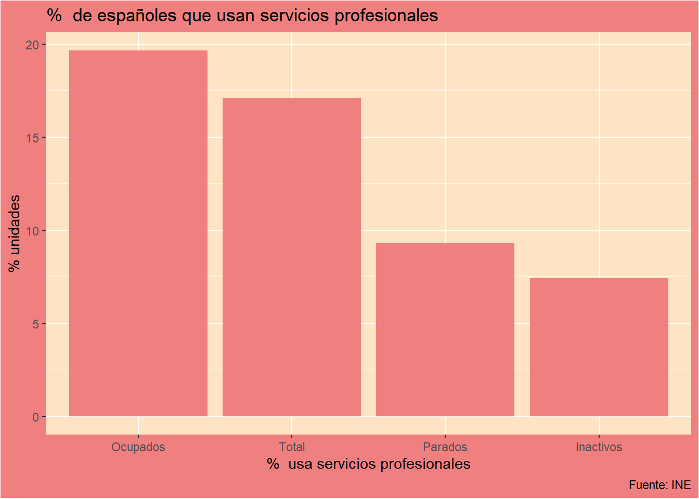
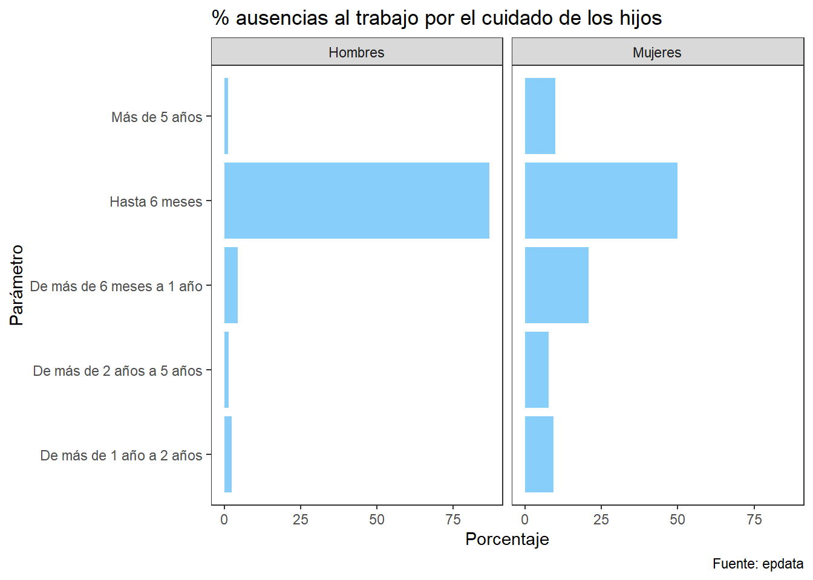
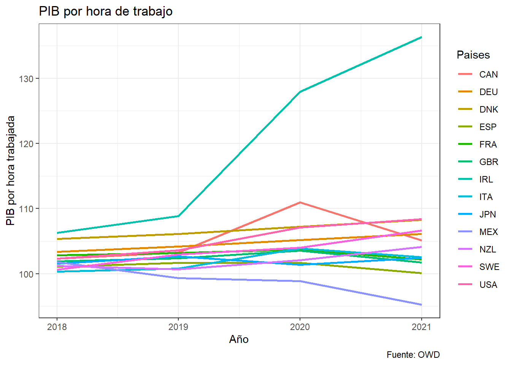
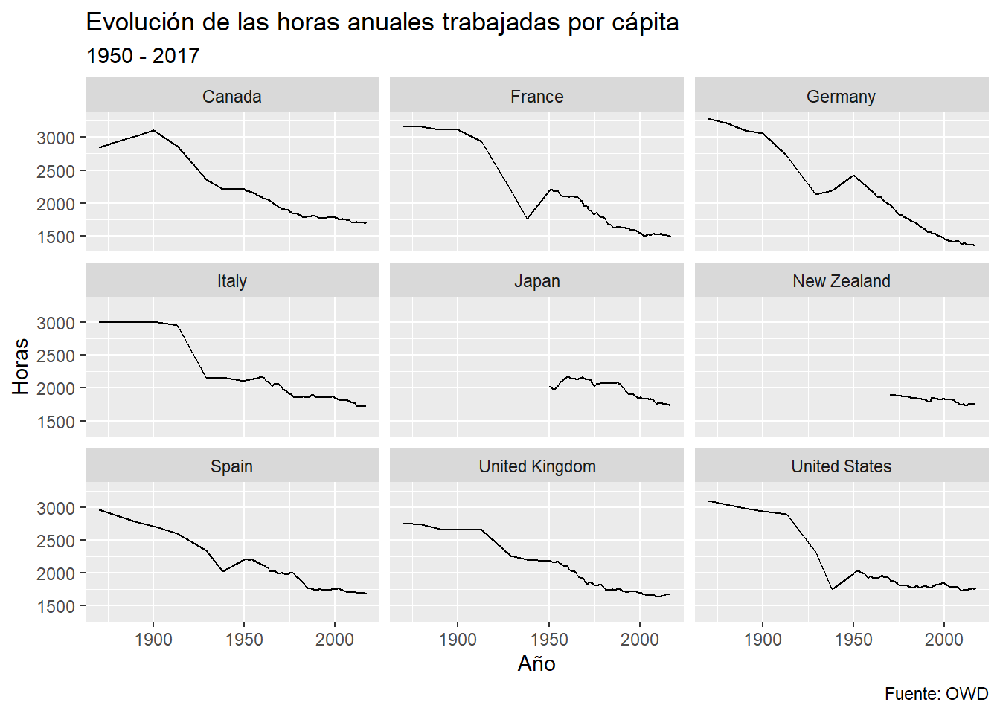
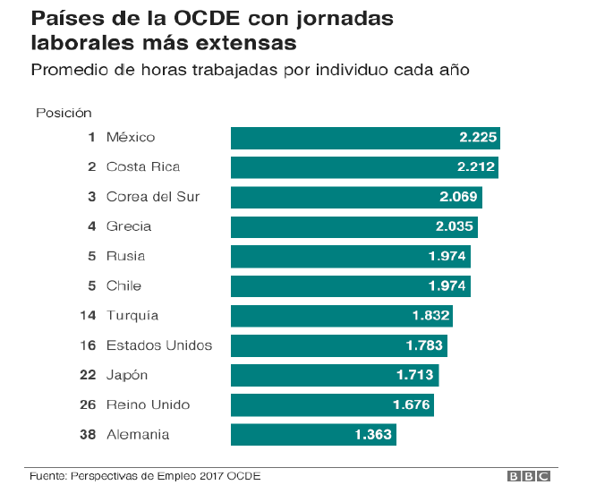
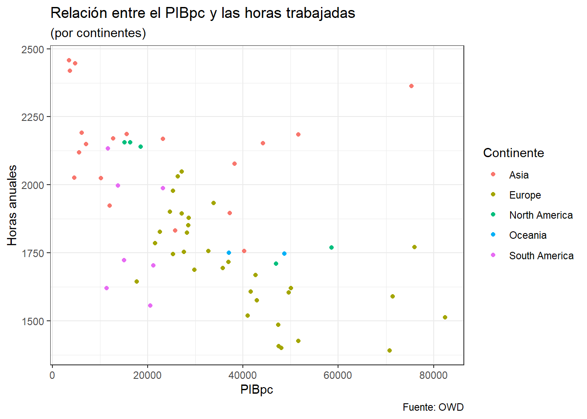

1. Introducción
El debate sobre el tiempo que dedicamos al trabajo y el tiempo personal que disponemos para vivir hace décadas que está sobre la mesa. Se trata de una reivindicación tradicional del movimiento obrero. Fue en 1817 cuando el teórico socialista Robert Owen realizó la primera formulación con la propuesta de ’ocho horas de trabajo, ocho horas de recreo, ocho horas de descanso” que tuvo su origen en las esclavas condiciones de trabajo en la Revolución Industrial en Gran Bretaña a mediados del siglo XVIII.
En España fue en 1919, tras la huelga de La Canadiense, cuando se consiguió la implantación de la ley que limitaba la jornada laboral a 48 horas semanales. Cabe destacar que durante los años 90 la propuesta de reducir la jornada estaba fundamentada principalmente en el reparto del empleo.
Actualmente las nuevas propuestas respaldan esta política como medida necesaria para la conciliación familiar y laboral, pero es posible encontrar otros efectos positivos que conlleva la reducción de la jornada de trabajo como son, la mejora de la calidad de vida, el desempleo, la igualdad de género, la sostenibilidad y la salud, entre otras. Estos aspectos serán analizados a lo largo del presente trabajo como argumentos principales a favor de la reducción de la jornada laboral.
2. Argumentos a favor
La propuesta de la semana laboral de cuatro días no solo tendría ganancias para la productividad de las empresas o el bienestar de los trabajadores sino para la sociedad y la economía en su conjunto.
Los diferentes argumentos que podrían ofrecerse como argumentación del presente tema son los siguientes:
2.1 Estimulo para la economía
La semana laboral de cuatro días supondría un estimulo para la economía a través del aumento en la demanda de las industrias del ocio, la hostelería y el turismo. Necesitamos dinero para consumir, pero también necesitamos tiempo. La discusión actual sobre cómo estimular la economía se centra en el papel del gasto público o los impuestos.
Keynes escribió
“la política de pleno empleo por medio de la inversión pública era sólo una aplicación particular de un teorema intelectual”
“También se puede producir el resultado consumiendo más o trabajando menos.”
2.2 Incentivo a la innovación
La historia muestra como las muchas nuevas ideas y nuevos productos nacen durante las horas de ocio. Según Edmund Phelps, un Nobel de la economía, en su libro Mass Flourishing, la clave del crecimiento económico es la innovación autóctona, realizada por personas comunes en todos los rincones de la economía. Su origen es el tiempo libre.
2.3 Conciliación laboral y familiar
La conciliación familiar y laboral es un conjunto de medidas enfocadas a beneficiar al trabajador para que pueda tener unas mejores condiciones a la hora de trabajar sin que afecte a su vida familiar y personal. Adicionalmente, se puede comprender desde la igualdad de género, buscando una reestructuración del sistema de trabajo para que la participación en el mercado de trabajo sea lo más equitativa posible entre hombres y mujeres.
La posibilidad de conciliar con éxito la vida laboral y familiar podría ser positiva en aspectos como:
- El bienestar, la motivación y la satisfacción de los trabajadores
- Menor probabilidad de que los trabajadores sufran estrés o ansiedad
- Mayor desarrollo a nivel profesional y/o personal.
- Creación de un buen clima de trabajo que se base en la igualdad de oportunidades
- Disminución de los índices de absentismo
- Mejora de la capacidad productiva
Las horas que una persona trabaja inciden sobre la oportunidad para dedicar ese tiempo a la familia, debido a que las horas de las actividades con la familia compiten con las horas de la jornada laboral (es un coste de oportunidad). Dichas actividades promueven el bienestar, además hay una relación muy directa entre el cuidado de los padres y el desarrollo tanto cognitivo como emocional de los hijos.
Casi la mitad de trabajadores (el 49,55%) no pudo modificar en 2018 su jornada laboral para poder asumir responsabilidades relacionadas con el cuidado de otras personas, según refleja el módulo sobre conciliación entre la vida laboral y la familiar de la Encuesta de Población Activa (EPA)
Ante esta situación, el 17,1% de las personas de 18 a 64 años de España con hijos menores de 15 años utilizaron en 2018 habitualmente servicios profesionales para el cuidado de sus hijos. Este porcentaje es todavía mayor en el caso de ocupados, en donde el porcentaje que usa servicios de profesionales para el cuidado de sus hijos asciende hasta el 19,66%. Estos datos pueden verse en el siguiente gráfico:
En cuanto al 82,9% restante de españoles que no usa estos servicios, la mayoría (49,52%) se organiza sólo o con su pareja para cuidar a sus hijos y hay otro 19,84% que pide ayuda a abuelos, familiares y amigos para ello.
Entre los que encuentran dificultades, tanto para los hombres como las mujeres los principales problemas tienen que ver con la largas jornadas de trabajo y los horarios inflexibles.
| Problemas para conciliar | ||||
| En que medida el trabajo afecta a la conciliación | ||||
| Año | Parámetro | Hombres | Mujeres | Ambos |
|---|---|---|---|---|
| 2018 | No dispone de 1 día libre a la semana | 49.33 | 46.77 | 48.08 |
| 2018 | No pueden cambiar horario entrada y salida | 52.32 | 46.64 | 49.55 |
En este sentido, el porcentaje de hombres que afirma no poder cambiar su horario de trabajo es mayor que el de las mujeres. Y también es más elevado el porcentaje de hombres que afirman que en su trabajo no pueden organizarse la jornada de manera que tengan un día libre a la semana para el cuidado de familiares.
Si nos centramos en la perspectiva de género este tema es uno de los más importantes a resolver puesto que con los datos que nos encontramos se muestra una gran diferencia entre hombres y mujeres a lo que se refiere la duración de la jornada laboral de los mismos, que provocan una importante discriminación laboral hacia las mujeres con vidas laborales más cortas y erráticas, peores salarios, menores cotizaciones y menos derechos adquiridos como trabajadoras.
En los últimos años, el fuerte crecimiento del trabajo a tiempo parcial se ha concentrado en las mujeres. Hasta un 70% de este tipo de contrataciones corresponden a las mujeres, de las cuales más de la mitad son involuntarias. Además, el 20% de estos casos es debido al desigual reparto de los cuidados ya que solamente un 5% de los hombres declaran que tengan una jornada laboral reducida por motivos de esta índole.
Aparte de las jornadas laborales más cortas de lo que se desearía (especialmente mujeres) y jornadas muy largas (mayoritariamente hombres), podemos hablar del distinto uso del tiempo, no solo laboral, entre géneros. Los hombres dedican menos de la mitad de su tiempo al cuidado del hogar y la familia que las mujeres.
En la siguiente tabla podemos ver los efectos que tiene el papel de madre en la vida laboral de las mujeres. El número de mujeres que se han reducido las horas para cuidar de sus hijos es mayor que el de los hombres.

2.4 Empleo y productividad
Como afecta la política de reducción de la jornada laboral al empleo es probablemente una de las variables mas estudiadas y que mayor controversia originan. Siendo finalmente ambiguos los posibles efectos sobre esta.
Para que la reducción del tiempo de trabajo tenga efectos positivos sobre el empleo debe ir acompañada de una reacción de la productividad, de medidas de reordenación del trabajo, así como de la participación en las negociaciones colectivas tanto de los empresarios como de los representantes del trabajador.
La reordenación del trabajo es una transformación laboral que debería llevarse a cabo con tal de mejorar el aprovechamiento de la capacidad productiva, gracias a una mejor y mayor utilización de los equipos de producción. (por ejemplo, estableciendo distintos turnos de trabajo que permitan mantener durante mayor tiempo el funcionamiento de las maquinas). Esta mayor duración del uso del capital instalado provoca la disminución de los costes unitarios, lo que, a su vez, permitirá mantener un precio competitivo, así como el nivel de beneficios. Además, el incremento de la productividad vendrá determinado también por la propia reducción del tiempo de trabajo, ya que el rendimiento laboral mejora al disminuir el tiempo trabajado.
En España destaca el presentismo y el absentismo como dos de las causas que disminuyen la productividad del trabajo y de su calidad, así como el impacto que tiene sobre los costes empresariales. La tasa de absentismo incluye las ausencias debidas a todas las causas, justificadas (como bajas médicas) o no. Representa el porcentaje de horas pactadas que no se realizan por culpa de dichas ausencias. España presenta uno de los niveles mas elevados de este fenómeno. Por lo que una reducción del tiempo de trabajo disminuiría esta tasa, incrementando la productividad del trabajador.
En resumen, una jornada laboral mas larga y menos flexible tiene efectos negativos sobre la productividad de los trabajadores derivados del estrés, la fatiga o la imposibilidad de conciliar la vida laboral y familiar. Además de un mayor absentismo o un uso indebido de las bajas por enfermedad.
En el siguiente gráfico podemos ver el elevado número de personas que faltan a su puesto de trabajo diariamente.
A continuación, si comparamos diferentes paises cabe destacar que aquellos con menores jornadas laborales como Irlanda presentan un mayor PIB por hora trabajada. Por el contrario, paises como Mexico o España con mayores jornadas laborales presentan un menor PIB por hora trabajada. Por tanto podemos afirmar que existe una correlación negativa entre la productividad y el tiempo de trabajo.
#> Paises año valor
#> 1 CAN 2018 102.34256
#> 2 CAN 2019 103.22415
#> 3 CAN 2020 110.96693
#> 4 CAN 2021 105.12065
#> 5 DNK 2018 105.35079
#> 6 DNK 2019 106.13311
#> 7 DNK 2020 107.22729
#> 8 DNK 2021 108.29519
#> 9 FRA 2018 102.81463
#> 10 FRA 2019 103.21574
#> 11 FRA 2020 103.73655
#> 12 FRA 2021 102.18744
#> 13 DEU 2018 103.37568
#> 14 DEU 2019 104.16279
#> 15 DEU 2020 105.18509
#> 16 DEU 2021 106.10041
#> 17 IRL 2018 106.29005
#> 18 IRL 2019 108.83146
#> 19 IRL 2020 127.92280
#> 20 IRL 2021 136.35954
#> 21 ITA 2018 100.32329
#> 22 ITA 2019 100.82174
#> 23 ITA 2020 103.87657
#> 24 ITA 2021 102.57374
#> 25 JPN 2018 101.58213
#> 26 JPN 2019 102.65947
#> 27 JPN 2020 101.36175
#> 28 JPN 2021 102.43005
#> 29 MEX 2018 101.78134
#> 30 MEX 2019 99.32087
#> 31 MEX 2020 98.86049
#> 32 MEX 2021 95.27273
#> 33 NZL 2018 101.20590
#> 34 NZL 2019 100.65826
#> 35 NZL 2020 102.09086
#> 36 NZL 2021 104.13597
#> 37 ESP 2018 101.10331
#> 38 ESP 2019 101.66414
#> 39 ESP 2020 101.69746
#> 40 ESP 2021 100.11669
#> 41 SWE 2018 100.63701
#> 42 SWE 2019 102.93409
#> 43 SWE 2020 104.02951
#> 44 SWE 2021 106.65183
#> 45 GBR 2018 101.90874
#> 46 GBR 2019 102.37567
#> 47 GBR 2020 103.55834
#> 48 GBR 2021 101.73297
#> 49 USA 2018 102.34220
#> 50 USA 2019 103.58171
#> 51 USA 2020 107.11118
#> 52 USA 2021 108.38662
Finalmente, mostramos la evolución de las horas anuales trabajadas per cápita desde 1950 hasta 2017 cuya característica común de los paises mostrados es su tendencia descendente.

2.5 Sostenibilidad
Las reducciones en el horario laboral se traducen además en menor consumo energético, menor huella ecológica y menor contaminación (como se ha evidenciado ya durante la recesión por causa de la pandemia). El confinamiento, como medida sanitaria para combatir la Covid-19, demostró que hay una sobre actividad económica y laboral que contamina el aire, el agua y la tierra. Reducir el tiempo que se le dedica al trabajo bien podría llegar a ser una medida, efectiva y tangible para enfrentar la crisis climática. Por lo que reducir las horas de trabajo favorecería la reducción de las emisiones de CO2. Hay estudios que han demostrado que las jornadas laborales más largas estimulan estilos de vida más intensivos en emisiones. Los primeros días de la pandemia, en algunas ciudades la contaminación se redujo en un 58%.
2.6 Fomentar la natalidad
Según los datos más recientes disponibles sobre la población española del Instituto Nacional de Estadística (INE), por un lado, el número de mujeres en edad de ser madres —de 15 a 49 años— se ha ido reduciendo desde 2009 en un 9% debido a que este rango de edades está formado por personas nacidas durante la crisis de natalidad de los 80 y primera mitad de los 90, la cual está directamente relacionada con la incorporación masiva de la población femenina al mercado laboral español a partir de 1985. Los datos provisionales de 2020 indican que el número de nacimientos se redujo un 5,9% y el número medio de hijos por mujer se situó en 1,18
En el siguiente gráfico podemos ver cual ha sido la tendencia de nacimientos en España en las última décadas.
Desde 2008 la edad media a la maternidad esta por encima de los 30 años y va en aumento. Por otro lado, las proyecciones demográficas en España para el año 2064 publicadas por el INE el 28 de octubre de 2014 pronostican la ampliación del saldo vegetativo negativo que comenzó a producirse ya en 2015 —el número de muertes supera el de nacimientos— que ni el saldo migratorio podrá contrarrestar. La edad media a la maternidad crecerá paulatinamente hasta llegar a los 35-36 años y el número de mujeres en edad fértil se reducirá en 4,3 millones, casi un 40% menos de las que hay ahora
Considerando los datos demográficos y sus respectivas proyecciones, es evidente que las políticas de conciliación implementadas hasta ahora no han cumplido en absoluto con el objetivo de favorecer a la familia ni de promover la natalidad en nuestro país.
La siguiente cita representa la problemática actual en cuestiones de género. Es un hecho que el enfoque que se le otorga al significado de igualdad es erróneo. Tal y como reconoce López (2017):
“Nadie puede negar que hombres y mujeres somos idénticos en derechos y obligaciones, pero no lo somos en nuestras realidades biológicas, comportamientos sociales e incluso en nuestros intereses personales y familiares. Y estas diferencias deben ser tenidas en cuenta, especialmente aquellas que tienen su origen en nuestra propia naturaleza biológica. Entre ellas se encuentra la maternidad, que es una realidad que nos convierte en desiguales y que hay que proteger. Si no se trabaja desde el ámbito público y empresarial para apoyar la maternidad y se facilita su compatibilidad con el trabajo remunerado —lo que resulta imprescindible para evitar un mayor riesgo de pobreza—, es imposible lograr una verdadera igualdad.”
3. Propuesta en España
En España tenemos demasiado interiorizada la jornada laboral de 40 horas semanales, pero desde el Gobierno quieren cambiar esta filosofía laboral para adaptarse a otros países de la Unión Europea. El cambio nos trasladaría hasta tener una jornada laboral de cuatro días a la semana, algo que va en aumento, y no cinco como ocurre ahora. Para ello, el Ministerio de Industria y Comercio va a dar diferentes ayudas para poder hacerlo realidad en un proyecto piloto.
El objetivo de este plan es reducir la jornada laboral a cuatro días, pero en ningún caso se deben reducir los salarios de los empleados. Obviamente esto tiene un gasto extra de relevancia, y para poder amortiguarlo el Ministerio de Industria ofrecerá una ayuda de 150.000 a las pequeñas y medianas empresas (pymes). Este plan piloto, que ha resultado de un acuerdo para sacar adelante los PGE 2022, beneficiará a 60 o 70 pymes con un presupuesto para ello de 10 millones de euros.
Este proyecto pretende mejorar la productividad de los trabajadores, la conciliación laboral y la igualdad de oportunidades. Pero lo verdaderamente importante es que reducir el estrés de los trabajadores y las posibles crispaciones al tener tres días de descanso, en lugar de dos. Igualmente, las empresas también van a tener que incorporar medidas organizativas, y de formación continua, para mejorar esta productividad. Y con el objetivo de evaluarlo se deberán fijar indicadores para ver la evolución de esta productividad.
Lo más destacado de este plan es precisamente el hecho de que el trabajador no va a ver menguado su salario a cambio de esta reducción de la jornada. Hay que tener en cuenta que España no es el primer país en aplicar este modelo laboral.
A continuación, como ejemplo real les mostraré un video de la primera empresa española que aplicó la reducción de la jornada laboral a 4 dias de trabajo en España.
4. Contexto internacional
Si nos referimos a la situación internacional, hay países donde no tienen estipulada la misma jornada laboral y dependen de factores políticos, culturales o costumbres. El gobierno de cada país determina cuál es su jornada laboral máxima en el caso de que la tenga.
Según los datos de la OCDE (2019), la jornada laboral se puede clasificar en tres grupos: América, Asia y África, y Europa.
En América Latina se encuentran las jornadas laborales más largas (por ley). Se pueden distinguir en dos subgrupos, los que tienen límites semanales de 48 horas que son países como Argentina, Bolivia, Colombia, Costa Rica, México, Nicaragua, Panamá, Perú y Uruguay. Por otra parte, están los que tienen un rango que va de 40 a 47 horas donde están países como Chile, Brasil, Cuba, República Dominicana, El Salvador, Guatemala, Honduras, Venezuela y Ecuador.
En Asia y África es donde se trabajan más horas, pero gran parte de las legislaciones no contemplan una jornada laboral máxima. Un ejemplo podría ser Corea del Sur donde está regularizado y pueden llegar a las 52 horas semanales. En Australia, la jornada máxima es de 36 horas semanales para trabajadores del sector privado y 38 horas para trabajadores del sector público.
En cambio, en Europa todos los países que la componen tienen fijada una jornada laboral máxima, cuyo máximo es de 48 horas semanales, que se pueden llegar a ampliar hasta las 65 horas durante un periodo de 3 meses si hay un acuerdo previamente entre empresario y trabajador. La OCDE elaboró una estimación de las horas de trabajo efectivas registradas por países. En dichos resultados se puede observar como las jornadas laborales con menos horas son los países europeos regulados, como por ejemplo Holanda, Alemania, Dinamarca y Noruega (En Noruega apuestan mucho por la conciliación de la vida laboral y familiar, y los padres tienen derechos especiales en el trabajo, como por ejemplo salir temprano del trabajo para recoger a sus hijos pequeños del colegio.) donde están por debajo de las 34 horas semanales.


5. Conclusión
En conclusión, la sustancia de cada argumento se relaciona con lo que la gente haría con su día extra de trabajo. Podrían descansar más, lo que aumentaría su eficiencia durante sus cuatro días laborales. Podrían disfrutar de actividades de ocio que impliquen gastos, lo que estimularía el consumo. Podrían decidir trabajar, por lo que estarían ejerciendo su libertad individual. Podrían aprovechar el día para volver a capacitarse y adquirir nuevas habilidades que les ayudarán a pasar a una ocupación más gratificante o prometedora. O podrían dedicar su tiempo a su pasión y crear las innovaciones del futuro. En la mayoría de los modelos económicos, el trabajo se considera un insumo para la producción y el ocio como un tiempo fuera de la economía - un vacío. Pero somos humanos y lo que hacemos en nuestro tiempo libre también contribuye a la economía. Cada acto de ocio tiene una recompensa económica para alguien.
Finalmente recordar que la semana laboral es una construcción social, política y económica. En los últimos 50 años, casi todo en nuestra sociedad ha cambiado - la velocidad con la que nos comunicamos, los tipos de trabajos que hacemos, la tecnología disponible para nosotros, la cantidad de años que estudiamos, la estructura de nuestras familias, la duración de nuestras vidas, nuestras interacciones sociales. ¿Por qué no debería cambiar la semana laboral?
6. Bibliografía
La natalidad se reduce en España en 2021. (2022, 4 julio). Datosmacro.com. https://datosmacro.expansion.com/demografia/natalidad/espana
INE - Instituto Nacional de Estadística. INE. https://www.ine.es
OECD data. theOECD. https://data.oecd.org/
Data. (s. f.). Eurostat. https://ec.europa.eu/eurostat/web/main/data